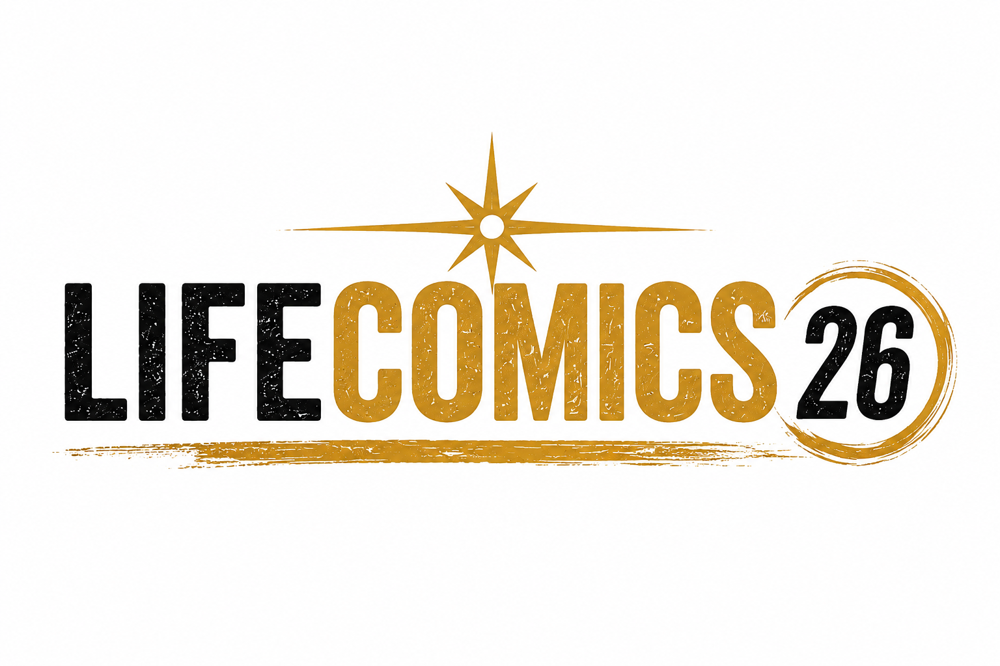
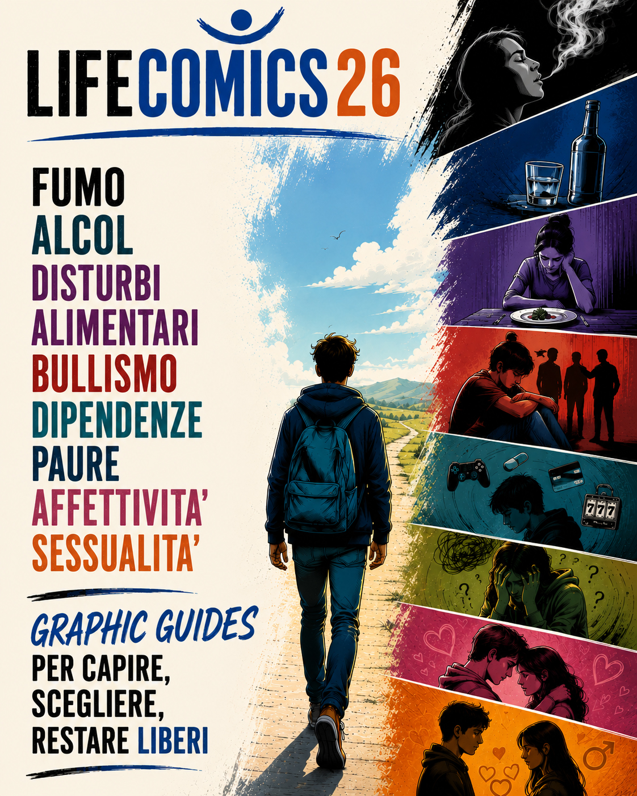
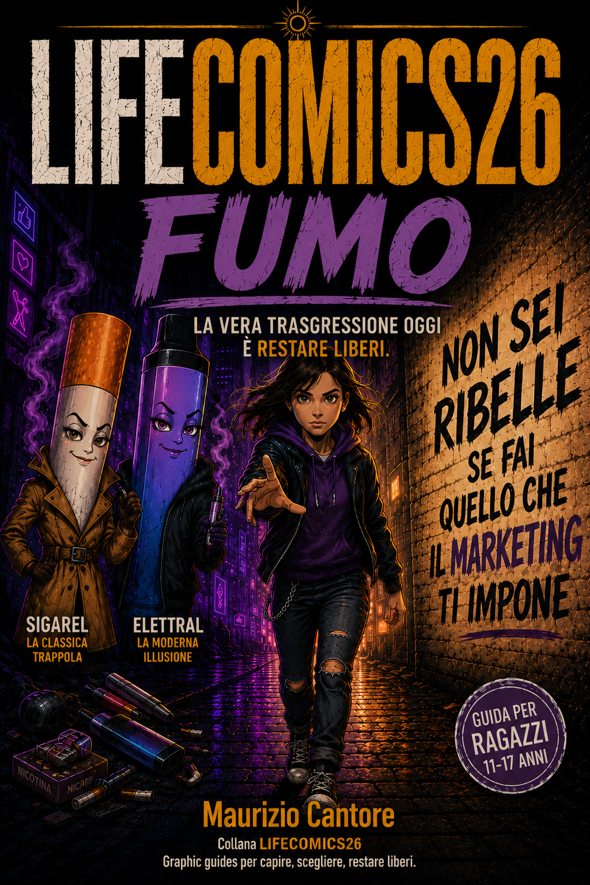
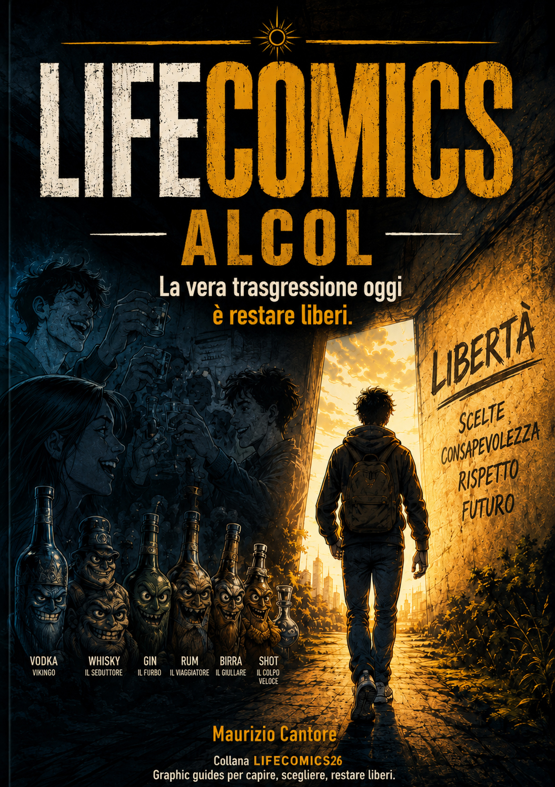
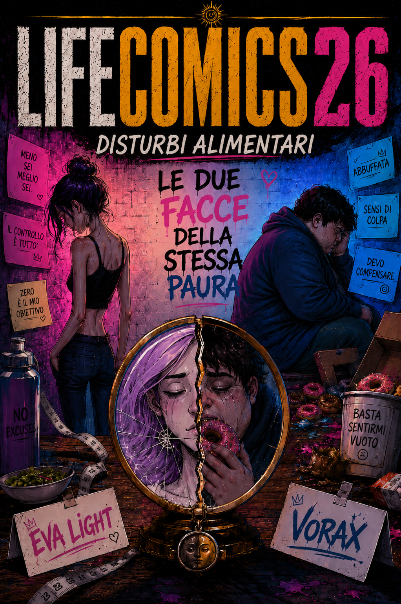
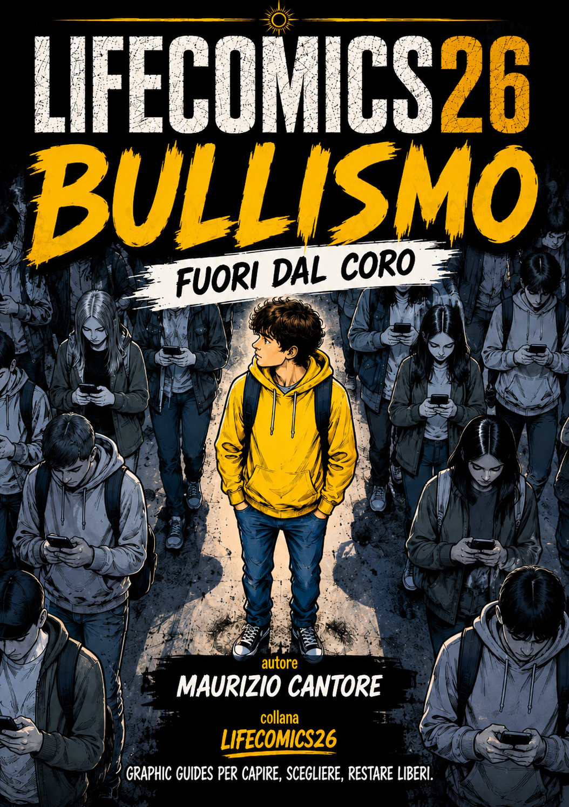
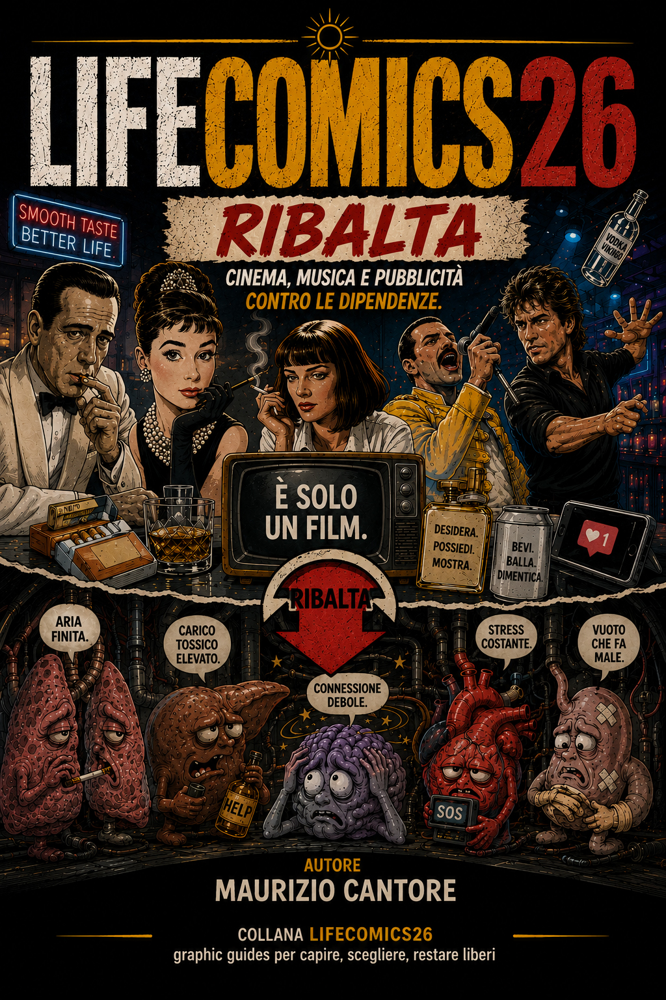

Per ragazzi
Materiali brevi, leggibili, costruiti per stimolare confronto tra pari.

Prevenzione · adolescenti · fumetto
Graphic guides per capire, scegliere, restare liberi.
LIFECOMICS26 è una collana di opuscoli a fumetti dedicata alla prevenzione e all'educazione alla salute per adolescenti, scuole, famiglie e comunità.

La Collana
LIFECOMICS26 usa storie, vignette, personaggi e domande aperte per affrontare temi di salute pubblica con un registro vicino agli adolescenti: chiaro, visivo, diretto, non giudicante.
Materiali brevi, leggibili, costruiti per stimolare confronto tra pari.
Indicazioni comunicative semplici: ascolto, tempo, parole giuste.
Spunti per discussioni guidate, educazione civica e promozione della salute.
LIFECOMICS26 è un progetto educativo senza fini di lucro. Tutti gli opuscoli possono essere scaricati gratuitamente.
Se li utilizzi a scuola, in famiglia o in un'associazione, ti chiediamo soltanto una cosa: lasciaci un suggerimento, una critica o un'esperienza che possa aiutarci a migliorare il progetto.
Lascia un suggerimentoVolume 1
Sigarette, sigarette elettroniche, dipendenza da nicotina, falsi miti e strategie per non iniziare.

Download PDFVolume 2
Pressione del gruppo, binge drinking, pubblicità, conseguenze immediate e alternative concrete.

Download PDFVolume 3
Quando il cibo diventa paura: segnali da non sottovalutare, corpo, emozioni, aiuto precoce.

Download PDFVolume 4
Branco, solitudine, esclusione, responsabilità collettiva e azioni correttive quotidiane.

Download PDFVolume 5
Meccanismo della dipendenza, vulnerabilità adolescenziale, alternative sane e obiettivi personali.
 Download PDF
Download PDF
Volume 6
Storie, testimonianze e personaggi capaci di trasformare fragilità, errore e caduta in ripartenza.

Download PDFPer le scuole
LIFECOMICS26 è pensato per scuole secondarie di primo e secondo grado come materiale di educazione alla salute, prevenzione e cittadinanza.
Opuscoli brevi, visivi e accessibili, costruiti per stimolare domande, confronto tra pari e consapevolezza.
Materiali utilizzabili in classe per educazione civica, salute, affettività, prevenzione e discussioni guidate.
Un linguaggio semplice per affrontare temi complessi senza giudizio, senza prediche e senza allarmismi inutili.
Per le Scuole
Gli opuscoli possono essere usati in incontri di educazione alla salute, percorsi di prevenzione, assemblee, laboratori e discussioni guidate.
Collega qui il Google Forms per raccogliere opinioni, punteggi e suggerimenti dai ragazzi.
Apri Google FormsPer i Comuni
LIFECOMICS26 è una collana educativa che utilizza il linguaggio del fumetto per affrontare temi prioritari della salute adolescenziale: fumo, alcol, disturbi alimentari, bullismo, dipendenze, paure, affettività e sessualità.
Materiali costruiti a partire da dati scientifici, testimonianze e situazioni reali vissute dagli adolescenti.
Utilizzabile in collaborazione con istituti scolastici, biblioteche, consulte studentesche e servizi educativi.
Possibilità di presentazioni pubbliche, incontri con studenti, genitori e insegnanti.
Contatti